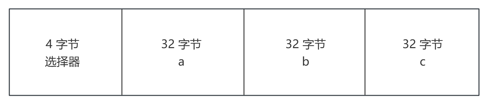
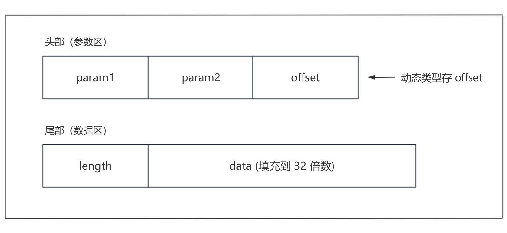
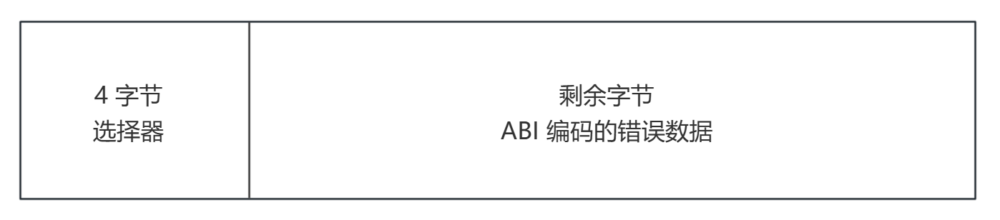
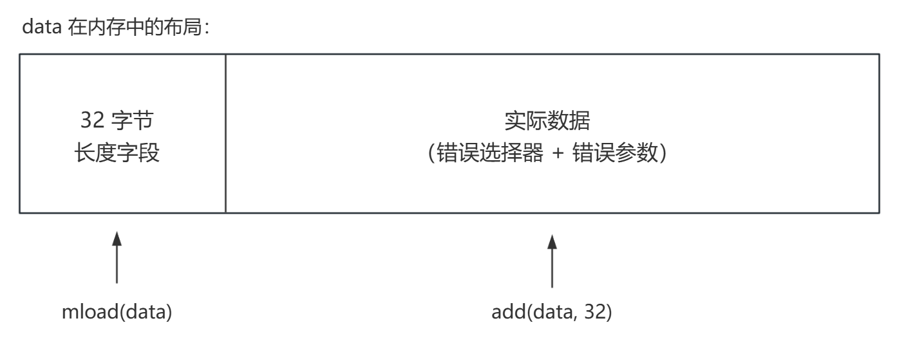

EVM 基础原理（三） ：ABI 编码与底层调用 ¶
约 1952 个字 102 行代码 4 张图片 预计阅读时间 8 分钟
本文是 EVM 基础原理系列的第三篇，掌握 ABI 编码规则和底层调用的实战技巧。
ABI（Application Binary Interface）是合约与外部世界交互的协议。理解它有助于：
- 构造原始交易
- 解析链上数据
- 排查调用失败问题
一、函数选择器 ¶
计算规则 ¶
选择器 = 函数签名的 keccak256 哈希的前 4 字节。
函数签名的规范格式：
- 函数名 + 参数类型列表
- 不含空格、参数名、返回值
- 使用基础类型（uint256 而非 uint）
transfer(address,uint256) ✓ 正确
transfer(address to, uint256) ✗ 不能有参数名
transfer(address, uint) ✗ uint 应写成 uint256
选择器碰撞 ¶
选择器只有 4 字节（32 位
碰撞：两个不同的函数签名产生相同的选择器。
经典案例：
碰撞的影响：
- 同一合约内：编译器会报错，不允许存在
- 跨合约调用：如果选择器碰撞且参数类型兼容，可能调用到错误的函数
安全提示：使用知名函数名（如 ERC20 标准）可降低碰撞风险。
二、静态类型编码 ¶
ABI 编码的核心规则：所有值填充到 32 字节。
| 类型 | 编码方式 | 示例 |
|---|---|---|
| uint256 | 直接使用 | 100 → 0x0000...0064 |
| uint8/uint128 等 | 左填充零到 32 字节 | uint8(1) → 0x0000...0001 |
| int256 | 负数用补码 | -1 → 0xffff...ffff |
| address | 左填充零到 32 字节 | 0xABC... → 0x000...ABC... |
| bool | 0 或 1 | true → 0x0000...0001 |
| bytes1-bytes32 | 右填充零到 32 字节 | bytes4(0x12345678) → 0x12345678000...000 |
多参数打包 ¶
多个参数按声明顺序依次拼接，每个 32 字节。
calldata 结构：

三、动态类型编码 ¶
静态类型编码很简单：每个值固定 32 字节，按顺序拼接。但动态类型（string、bytes、数组）长度不固定，怎么办？
解决方案：头部放 offset（偏移量
通用结构 ¶

- Head（头部）：每个参数占 32 字节，动态参数存 offset，指向 Tail 起始位置
- Tail（尾部）：真正的数据内容，只为动态参数存在，按顺序追加，格式：
length (32 bytes)+data (按 32 字节对齐) - offset：从头部起始位置到尾部起始位置的字节偏移量
演示程序：
// SPDX-License-Identifier: MIT
pragma solidity ^0.8.24;
contract ABI {
string public strVar;
bytes public bytesVar;
uint256[] public arr;
struct Students {
uint256 age;
string name;
uint256 grades;
}
event StringABI(string _string);
event BytesABI(bytes _bytes);
event ArrayABI(uint256[] _array);
event StudentInfo(uint256 indexed _age, string indexed _name, uint256 indexed _grades);
function abi_String(string memory _string) public {
strVar = _string;
emit StringABI(_string);
}
function abi_Bytes(bytes memory _bytes) public {
bytesVar = _bytes;
emit BytesABI(_bytes);
}
function abi_Array(uint256[] memory _array) public {
arr = _array;
emit ArrayABI(_array);
}
function Student(uint256 _age, string memory _name, uint256 _grades) public {
Students memory student;
student.age = _age;
student.name = _name;
student.grades = _grades;
emit StudentInfo(_age, _name, _grades);
}
}
实例 1：单个 string 参数 ¶
调用 abi_String("HelloWorld")，calldata 如下：
选择器: 0x5c235583
[0] offset: 0x0000...0020 (32，指向下一行)
[1] length: 0x0000...000a (10，字符串长度)
[2] data: 0x48656c6c6f576f726c6400...00 ("HelloWorld" + padding)
解读：
- offset = 0x20（十进制 32
） ，意思是从参数区起点数第 32 字节处开始是 string 的实际内容 - length = 0x0a（十进制 10
） ，HelloWorld共 10 个 ASCII 字符 - data 是 ASCII 编码，后面补零对齐到 32 字节
实例 2：混合参数 ¶
调用 Student(18, "Alice", 95)，参数类型：
_age→ uint256（静态）_name→ string（动态）_grades→ uint256（静态）
calldata 结构：
选择器: 0x4c585d74
[0] age: 0x0000...0012 (18)
[1] offset: 0x0000...0060 (96，指向 name 的 tail)
[2] grades: 0x0000...005f (95)
[3] length: 0x0000...0005 (5，"Alice" 的长度)
[4] data: 0x416c69636500...00 ("Alice" + padding)
为什么 offset = 0x60？
- head 区有 3 个参数，每个 32 字节
- head = 3 × 32 = 96 bytes = 0x60
- 所以
_name的 tail 从 0x60 开始
核心规则：static 参数直接存值，dynamic 参数在 head 里存 offset，真实内容统一放在 tail 中。
四、ABI 解码 ¶
手动解码步骤：
- 跳过前 4 字节选择器
- 按参数顺序读取头部
- 静态类型直接解析
- 动态类型根据 offset 跳转到尾部，读取 length 和 data
五、三种底层调用 ¶
| 操作码 | 用途 | 一句话描述 |
|---|---|---|
| call | 普通调用 | 调用别人的代码，操作别人的存储 |
| delegatecall | 委托调用 | 借用别人的代码，操作自己的存储 |
| staticcall | 只读调用 | 调用别人的代码，禁止任何状态修改 |
上下文对比 ¶
当合约 A 调用合约 B 时：
| 上下文 | call | delegatecall | staticcall |
|---|---|---|---|
| msg.sender | A | 保持原值 | A |
| msg.value | 可指定 | 保持原值 | 0 |
| 代码来源 | B | B | B |
| 存储操作 | B 的存储 | A 的存储 | 禁止写入 |
| address(this) | B | A | B |
delegatecall 的本质：" 借壳执行 "——代码是 B 的，但执行环境完全是 A 的。
返回值处理 ¶
success：调用是否成功（未 revert）data：返回的原始字节数据
六、底层调用的错误处理 ¶
高级调用 vs 底层调用 ¶
| 调用方式 | 异常行为 |
|---|---|
| 高级调用（接口调用） | 异常自动 " 冒泡 "，整个交易回滚 |
| 底层调用 | 返回 (false, errorData)，不会自动回滚 |
底层调用把错误处理的决定权交给调用者。你可以选择：
- 忽略错误，继续执行
- 冒泡错误，回滚整个交易
- 解码错误，做针对性处理
returndata 的结构 ¶
当被调用合约 revert 时，返回的 data 包含错误信息：

常见的错误选择器：
| 错误类型 | 选择器 | 来源 |
|---|---|---|
| Error(string) | 0x08c379a0 | require("message") 或 revert("message") |
| Panic(uint256) | 0x4e487b71 | assert 失败、溢出、除零等 |
| 自定义错误 | 各不相同 | error CustomError(...) |
方式 1：直接冒泡原始错误 ¶
场景：不关心具体错误内容，只需要把错误原样传递给上层调用者。
function forwardCall(address target, bytes calldata payload) external returns (bytes memory) {
(bool success, bytes memory data) = target.call(payload);
if (!success) {
assembly {
// data 的前 32 字节是长度，实际数据从 data + 32 开始
revert(add(data, 32), mload(data))
}
}
return data;
}
原理解析：

add(data, 32)：跳过长度字段，指向实际数据mload(data)：读取数据长度
方式 2：解码错误信息 ¶
场景：需要根据错误类型做不同处理，或者需要记录 / 转换错误信息。
function decodeError(bytes memory data) internal pure returns (string memory) {
if (data.length < 4) {
return "Unknown error";
}
bytes4 selector;
assembly {
selector := mload(add(data, 32))
}
// Error(string) 的选择器
if (selector == 0x08c379a0 && data.length >= 68) {
assembly {
data := add(data, 4) // 跳过 selector
}
return abi.decode(data, (string));
}
// Panic(uint256) 的选择器
if (selector == 0x4e487b71 && data.length >= 36) {
uint256 panicCode;
assembly {
panicCode := mload(add(data, 36))
}
// 根据 panicCode 返回对应描述
if (panicCode == 0x01) return "Assertion failed";
if (panicCode == 0x11) return "Arithmetic overflow";
if (panicCode == 0x12) return "Division by zero";
// ... 其他 panic code
}
return "Unknown error";
}
两种方式的对比 ¶
| 维度 | 直接冒泡 | 解码处理 |
|---|---|---|
| 代码复杂度 | 低（几行 assembly） | 高（需要解码逻辑） |
| Gas 消耗 | 低 | 较高 |
| 错误信息 | 保留原始信息 | 可以转换 / 增强 |
| 适用场景 | 代理合约、简单转发 | 需要错误日志、错误转换 |
代理合约的典型写法 ¶
fallback() external payable {
address impl = implementation;
assembly {
calldatacopy(0, 0, calldatasize())
let result := delegatecall(gas(), impl, 0, calldatasize(), 0, 0)
returndatacopy(0, 0, returndatasize())
switch result
case 0 { revert(0, returndatasize()) }
default { return(0, returndatasize()) }
}
}
小结 ¶
本文介绍了 ABI 编码和底层调用的核心知识：
- 函数选择器：keccak256 哈希的前 4 字节
- 静态类型：填充到 32 字节，按顺序拼接
- 动态类型：head 存 offset，tail 存 length + data
- 三种调用：call/delegatecall/staticcall 上下文不同
- 错误处理：可以冒泡原始错误，也可以解码处理
理解这些底层机制，能帮助你：
- 手动构造交易数据
- 解析链上的 calldata 和 returndata
- 编写更安全的代理合约
- 排查调用失败的根本原因
系列总结 ¶
至此，EVM 基础原理系列三篇文章已全部完成。让我们回顾整个系列的知识脉络：
第一篇：从交易到字节码 —— 建立 EVM 的整体认知。我们了解了以太坊作为状态机的本质，交易如何驱动状态变化，以及 Solidity 代码如何编译成 EVM 可执行的字节码。函数选择器的路由机制揭示了 EVM 如何找到并执行目标函数。
第二篇：数据区域与合约执行 —— 深入 EVM 的数据管理。栈、内存、存储三个数据区域各有特点和成本差异，理解它们是 Gas 优化的基础。合约的部署和调用机制则展示了 EVM 如何管理合约的生命周期。
第三篇：ABI 编码与底层调用 —— 掌握与合约交互的底层协议。ABI 编码规则决定了数据如何在合约间传递，底层调用的三种方式为不同场景提供了灵活的选择。
这三篇文章构成了一个完整的学习路径：从宏观认知到数据管理，再到交互协议。掌握这些基础知识后，你将能够：
- 更深入地理解 Solidity 代码的执行过程
- 有针对性地进行 Gas 优化
- 排查和解决底层调用问题
- 为学习更高级的主题（如代理模式、内联汇编、安全审计）打下坚实基础
EVM 的世界远不止于此，但有了这些基础，你已经具备了继续深入探索的能力。
系列导航：
- 第一篇：EVM 基础原理（一
） ：从交易到字节码 - 第二篇：EVM 基础原理（二
） ：EVM 数据区域与合约执行 - 第三篇：EVM 基础原理（三
） ：ABI 编码与底层调用（本篇）